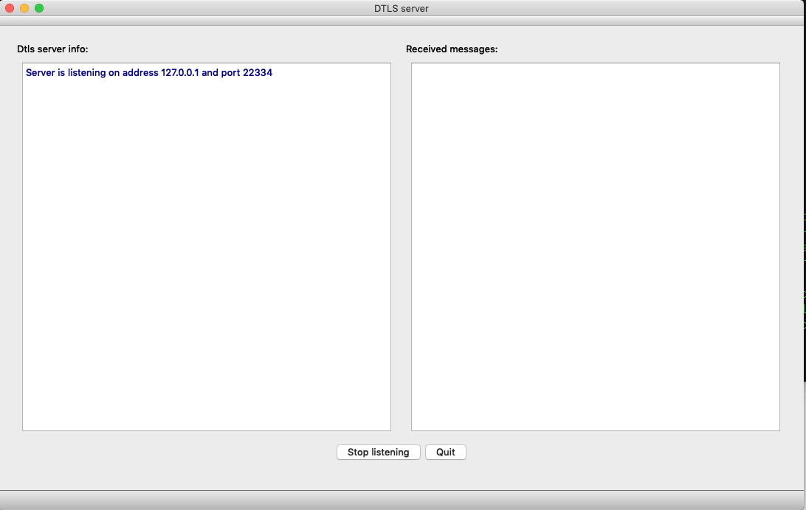

DTLS server
This examples demonstrates how to implement a simple DTLS server.

Note: The DTLS server example is intended to be run alongside the DTLS client example.
The server is implemented by the DtlsServer class. It uses QUdpSocket, QDtlsClientVerifier, and QDtls to test each client's reachability, complete a handshake, and read and write encrypted messages.
class DtlsServer : public QObject { Q_OBJECT public: DtlsServer(); ~DtlsServer(); bool listen(const QHostAddress &address, quint16 port); bool isListening() const; void close(); signals: void errorMessage(const QString &message); void warningMessage(const QString &message); void infoMessage(const QString &message); void datagramReceived(const QString &peerInfo, const QByteArray &cipherText, const QByteArray &plainText); private slots: void readyRead(); void pskRequired(QSslPreSharedKeyAuthenticator *auth); private: void handleNewConnection(const QHostAddress &peerAddress, quint16 peerPort, const QByteArray &clientHello); using DtlsConnection = QSharedPointer<QDtls>; void doHandshake(DtlsConnection newConnection, const QByteArray &clientHello); void decryptDatagram(DtlsConnection connection, const QByteArray &clientMessage); void shutdown(); bool listening = false; QUdpSocket serverSocket; QSslConfiguration serverConfiguration; QDtlsClientVerifier cookieSender; QVector<DtlsConnection> knownClients; Q_DISABLE_COPY(DtlsServer) };
The constructor connects the QUdpSocket::readyRead() signal to its readyRead() slot and sets the minimal needed TLS configuration:
DtlsServer::DtlsServer() { connect(&serverSocket, &QAbstractSocket::readyRead, this, &DtlsServer::readyRead); serverConfiguration = QSslConfiguration::defaultDtlsConfiguration(); serverConfiguration.setPreSharedKeyIdentityHint("Qt DTLS example server"); serverConfiguration.setPeerVerifyMode(QSslSocket::VerifyNone); }
Note: The server is not using a certificate and is relying on Pre-Shared Key (PSK) handshake.
listen() binds QUdpSocket:
bool DtlsServer::listen(const QHostAddress &address, quint16 port) { if (address != serverSocket.localAddress() || port != serverSocket.localPort()) { shutdown(); listening = serverSocket.bind(address, port); if (!listening) emit errorMessage(serverSocket.errorString()); } else { listening = true; } return listening; }
The readyRead() slot processes incoming datagrams:
...
const qint64 bytesToRead = serverSocket.pendingDatagramSize();
if (bytesToRead <= 0) {
emit warningMessage(tr("A spurious read notification"));
return;
}
QByteArray dgram(bytesToRead, Qt::Uninitialized);
QHostAddress peerAddress;
quint16 peerPort = 0;
const qint64 bytesRead = serverSocket.readDatagram(dgram.data(), dgram.size(),
&peerAddress, &peerPort);
if (bytesRead <= 0) {
emit warningMessage(tr("Failed to read a datagram: ") + serverSocket.errorString());
return;
}
dgram.resize(bytesRead);
...
After extracting an address and a port number, the server first tests if it's a datagram from an already known peer:
...
if (peerAddress.isNull() || !peerPort) {
emit warningMessage(tr("Failed to extract peer info (address, port)"));
return;
}
const auto client = std::find_if(knownClients.begin(), knownClients.end(),
[&](const DtlsConnection &connection){
return connection->peerAddress() == peerAddress
&& connection->peerPort() == peerPort;
});
...
If it is a new, unknown address and port, the datagram is processed as a potential ClientHello message, sent by a DTLS client:
...
if (client == knownClients.end())
return handleNewConnection(peerAddress, peerPort, dgram);
...
If it's a known DTLS client, the server either decrypts the datagram:
...
if ((*client)->isConnectionEncrypted()) {
decryptDatagram(*client, dgram);
if ((*client)->dtlsError() == QDtlsError::RemoteClosedConnectionError)
knownClients.erase(client);
return;
}
...
or continues a handshake with this peer:
...
doHandshake(*client, dgram);
...
handleNewConnection() verifies it's a reachable DTLS client, or sends a HelloVerifyRequest:
void DtlsServer::handleNewConnection(const QHostAddress &peerAddress, quint16 peerPort, const QByteArray &clientHello) { if (!listening) return; const QString peerInfo = peer_info(peerAddress, peerPort); if (cookieSender.verifyClient(&serverSocket, clientHello, peerAddress, peerPort)) { emit infoMessage(peerInfo + tr(": verified, starting a handshake")); ...
If the new client was verified to be a reachable DTLS client, the server creates and configures a new QDtls object, and starts a server-side handshake:
...
DtlsConnection newConnection(new QDtls(QSslSocket::SslServerMode));
newConnection->setDtlsConfiguration(serverConfiguration);
newConnection->setPeer(peerAddress, peerPort);
newConnection->connect(newConnection.data(), &QDtls::pskRequired,
this, &DtlsServer::pskRequired);
knownClients.push_back(newConnection);
doHandshake(newConnection, clientHello);
...
doHandshake() progresses through the handshake phase:
void DtlsServer::doHandshake(DtlsConnection newConnection, const QByteArray &clientHello) { const bool result = newConnection->doHandshake(&serverSocket, clientHello); if (!result) { emit errorMessage(newConnection->dtlsErrorString()); return; } const QString peerInfo = peer_info(newConnection->peerAddress(), newConnection->peerPort()); switch (newConnection->handshakeState()) { case QDtls::HandshakeInProgress: emit infoMessage(peerInfo + tr(": handshake is in progress ...")); break; case QDtls::HandshakeComplete: emit infoMessage(tr("Connection with %1 encrypted. %2") .arg(peerInfo, connection_info(newConnection))); break; default: Q_UNREACHABLE(); } }
During the handshake phase, the QDtls::pskRequired() signal is emitted and the pskRequired() slot provides the preshared key:
void DtlsServer::pskRequired(QSslPreSharedKeyAuthenticator *auth) { Q_ASSERT(auth); emit infoMessage(tr("PSK callback, received a client's identity: '%1'") .arg(QString::fromLatin1(auth->identity()))); auth->setPreSharedKey(QByteArrayLiteral("\x1a\x2b\x3c\x4d\x5e\x6f")); }
Note: For the sake of brevity, the definition of pskRequired() is oversimplified. The documentation for the QSslPreSharedKeyAuthenticator class explains in detail how this slot can be properly implemented.
After the handshake is completed for the network peer, an encrypted DTLS connection is considered to be established and the server decrypts subsequent datagrams, sent by the peer, by calling decryptDatagram(). The server also sends an encrypted response to the peer:
void DtlsServer::decryptDatagram(DtlsConnection connection, const QByteArray &clientMessage) { Q_ASSERT(connection->isConnectionEncrypted()); const QString peerInfo = peer_info(connection->peerAddress(), connection->peerPort()); const QByteArray dgram = connection->decryptDatagram(&serverSocket, clientMessage); if (dgram.size()) { emit datagramReceived(peerInfo, clientMessage, dgram); connection->writeDatagramEncrypted(&serverSocket, tr("to %1: ACK").arg(peerInfo).toLatin1()); } else if (connection->dtlsError() == QDtlsError::NoError) { emit warningMessage(peerInfo + ": " + tr("0 byte dgram, could be a re-connect attempt?")); } else { emit errorMessage(peerInfo + ": " + connection->dtlsErrorString()); } }
The server closes its DTLS connections by calling QDtls::shutdown():
void DtlsServer::shutdown() { for (DtlsConnection &connection : knownClients) connection->shutdown(&serverSocket); knownClients.clear(); serverSocket.close(); }
During its operation, the server reports errors, informational messages, and decrypted datagrams, by emitting signals errorMessage(), warningMessage(), infoMessage(), and datagramReceived(). These messages are logged by the server's UI:
const QString colorizer(QStringLiteral("<font color=\"%1\">%2</font><br>")); void MainWindow::addErrorMessage(const QString &message) { ui->serverInfo->insertHtml(colorizer.arg(QStringLiteral("Crimson"), message)); } void MainWindow::addWarningMessage(const QString &message) { ui->serverInfo->insertHtml(colorizer.arg(QStringLiteral("DarkOrange"), message)); } void MainWindow::addInfoMessage(const QString &message) { ui->serverInfo->insertHtml(colorizer.arg(QStringLiteral("DarkBlue"), message)); } void MainWindow::addClientMessage(const QString &peerInfo, const QByteArray &datagram, const QByteArray &plainText) { static const QString messageColor = QStringLiteral("DarkMagenta"); static const QString formatter = QStringLiteral("<br>---------------" "<br>A message from %1" "<br>DTLS datagram:<br> %2" "<br>As plain text:<br> %3"); const QString html = formatter.arg(peerInfo, QString::fromUtf8(datagram.toHex(' ')), QString::fromUtf8(plainText)); ui->messages->insertHtml(colorizer.arg(messageColor, html)); }